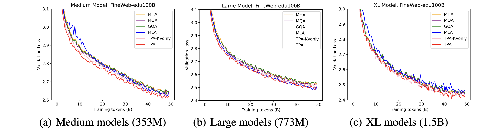
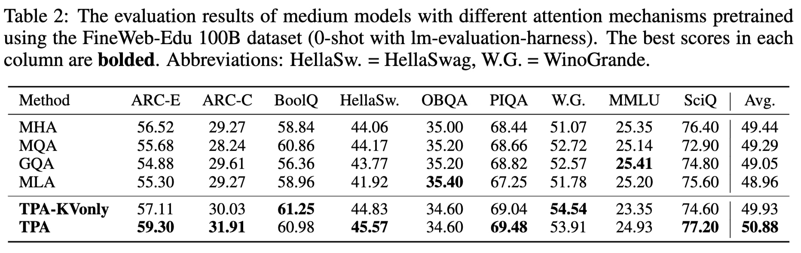
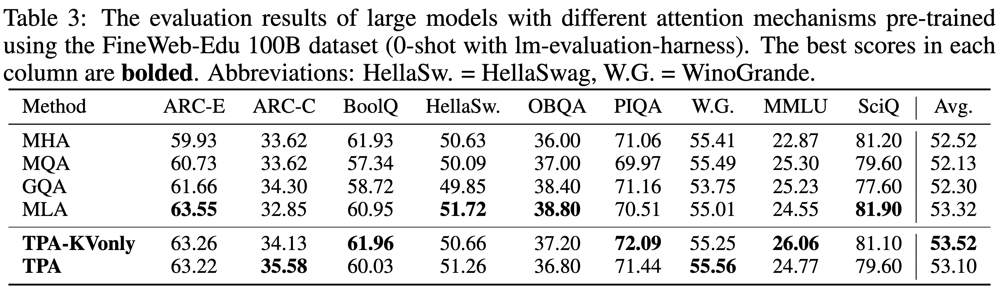
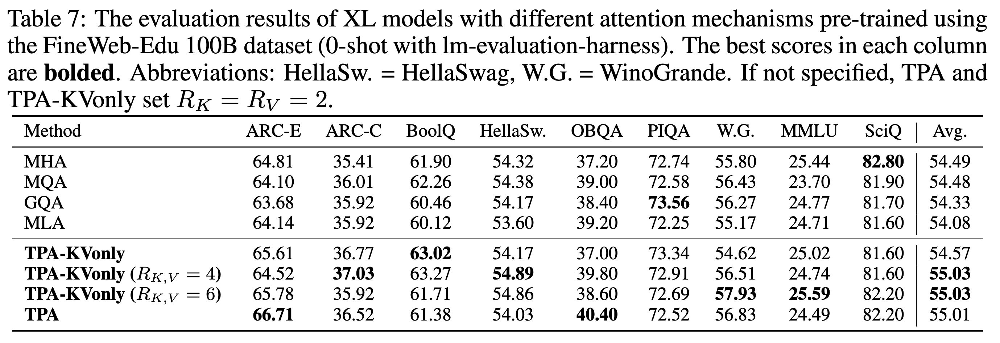
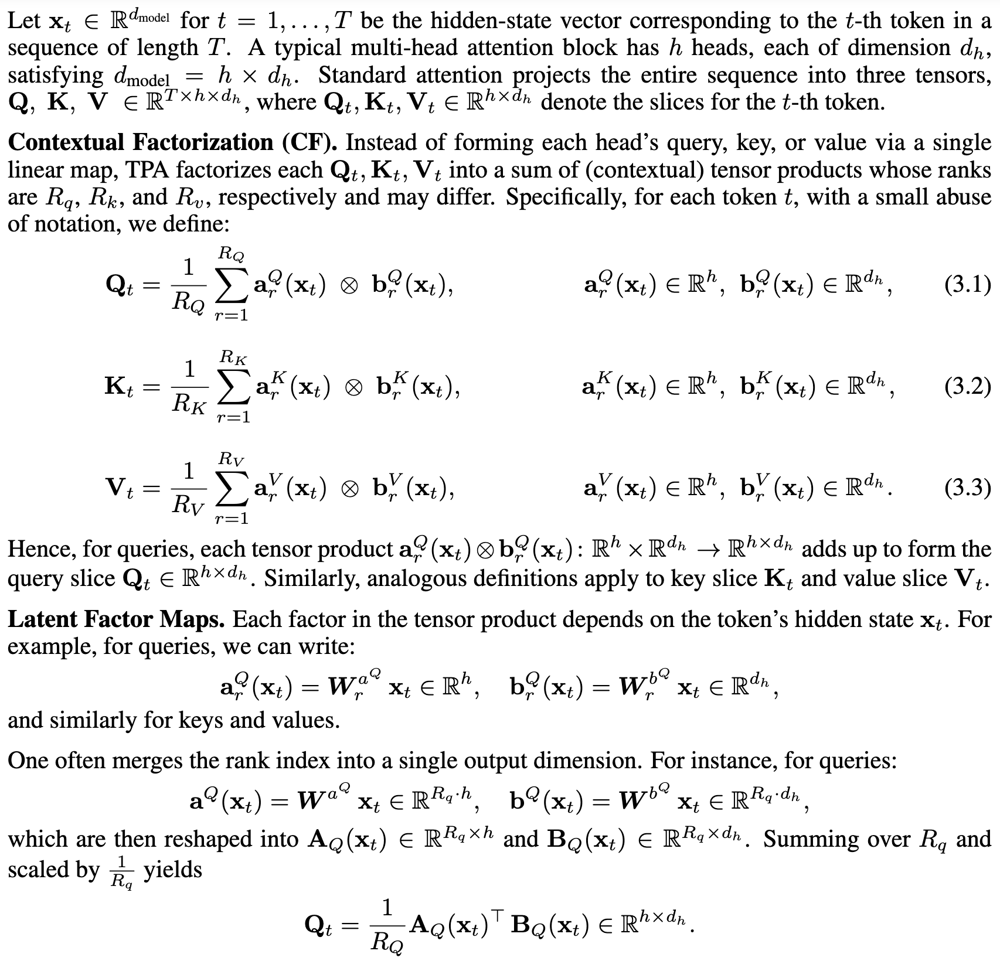
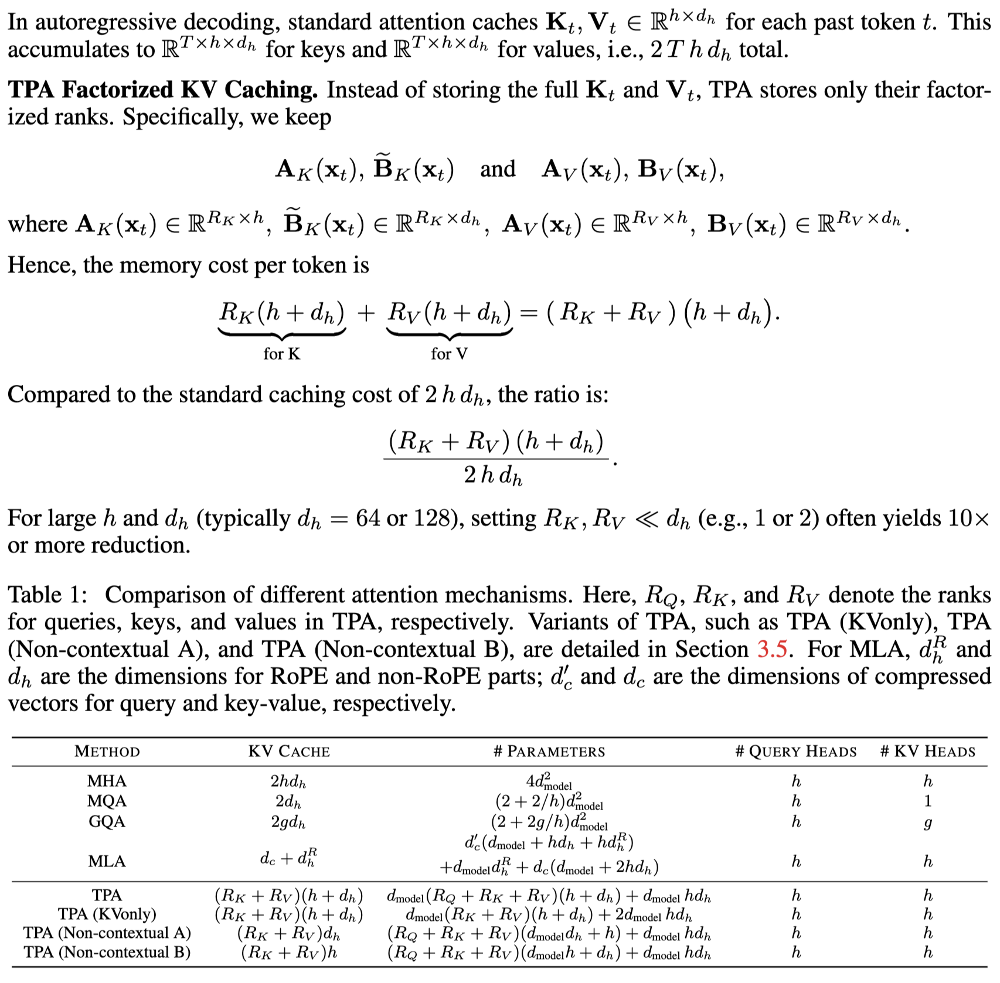

Scaling language models to handle longer input sequences typically necessitates large key-value (KV) caches, resulting in substantial memory overhead during inference. In this paper, we propose Tensor Product Attention (TPA), a novel attention mechanism that uses tensor decompositions to represent queries, keys, and values compactly, significantly shrinking KV cache size at inference time. By factorizing these representations into contextual low-rank components (contextual factorization) and seamlessly integrating with RoPE, TPA achieves improved model quality alongside memory efficiency. Based on TPA, we introduce the Tensor ProducT ATTenTion Transformer (T6), a new model architecture for sequence modeling. Through extensive empirical evaluation of language modeling tasks, we demonstrate that T6 exceeds the performance of standard Transformer baselines including MHA, MQA, GQA, and MLA across various metrics, including perplexity and a range of renowned evaluation benchmarks. Notably, TPA's memory efficiency enables the processing of significantly longer sequences under fixed resource constraints, addressing a critical scalability challenge in modern language models.








Please cite the paper and star this repo if you use Tensor Product Attention (TPA) or the Tensor ProducT ATTenTion Transformer (T6) and find it interesting/useful, thanks!
@article{zhang2025tensor,
title={Tensor Product Attention Is All You Need},
author={Zhang, Yifan and Liu, Yifeng and Yuan, Huizhuo and Qin, Zhen and Yuan, Yang and Gu, Quanquan and Yao, Andrew Chi-Chih},
journal={arXiv preprint arXiv:2501.06425},
year={2025},
}